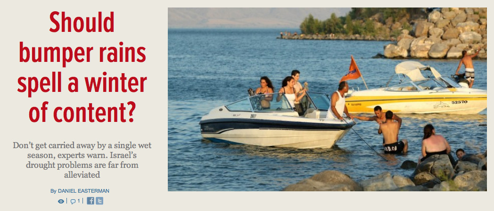

Don’t get carried away by a single wet season, experts warn. Israel’s drought problems are far from alleviated (SEE ORIGINAL)

Israelis enjoying the Sea of Galilee. (Photo: Moshe Shai/Flash90)
After eight years of persistent drought, Israelis can finally breathe a collective sigh of relief — this winter the heavens opened and the rains returned once again to the Holy Land. In a country where many ordinary citizens follow every fluctuation of the Sea of Galilee like investors tracking the latest prices of the Dow Jones Average, the sudden abundance of water has become a source of national joy.
This winter’s rains finally nudged the Sea of Galilee’s water level over its “bottom red line” (-213 meters) earlier this month, and the Israel Water Authority says the lake is the fullest it has been in the past four years. Israel’s most important source of drinking water, it is now a full 113 centimeters above the recorded level this time last year.
But are Israelis right in their new-found optimism? Is it true that our water supplies are now in much better shape? And did the months of near-incessant deluge have a long-term impact on relieving the consecutive years of shortage?
Actually, no. According to Dr. Amir Givati — head of the Department of Hydrometeorology, responsible for monitoring surface water at the Israel Water Authority — if we look at the forecast precipitation index or FPI which measures general drought levels, the rain this year was only slightly above average. Dr. Givati says that while global warming could be a factor, it is still not clear why Israel had suffered from drought or below-average rainfall for so many years in a row. Before this winter, the last time Israel received above-average precipitation was back in 2004 when the figures recorded were dramatically higher than this year’s rainfall.
Professor Uri Shamir of the Technion, an expert in environmental engineering and water resource management, fears that one year of surplus rain may cause the public to have a “fictitious” sense of plenty. “You have to look at it like a bank account,” explained Shamir. “Just because you receive a bonus one year, does not mean you will suddenly be able to satisfy all your needs straightaway, and especially after years of debt.”
While Shamir said that a good rain year was always welcome, he dismissed reports in the Israeli media suggesting that the winter’s higher-than-normal precipitation meant that any serious records had been broken. “If we are talking about the long-term, this year was totally insignificant,” said Shamir. “There were more dramatic years in 2002 / 2003, and before that in the winter of 1968 / 1969.”
Having served as an adviser and consultant to the Israel Water Authority since 1992, Shamir warns that the country’s water woes are far from over, especially now, as the population is set to increase markedly in the coming years. Frustrated by what he sees as a lack of understanding and unwillingness by politicians to heed the advice of experts, Shamir also says that climate change is likely to make the water situation even more challenging in the future.
Other academics such as Dr. Clive Lipchin, Director of the Center for Transboundary Water Management at the Arava Institute in southern Israel, agree that the impact of one surplus year will indeed be limited. But Dr. Lipchin also says that recent advances in water treatment and recycling, coupled with the proliferation of desalinization plants, mean that the future is not all doom and gloom. In fact, he predicts that desalinization may reduce dependency or one day even replace the Sea of Galilee as the major water resource of the country.
When it comes to Israel’s multimillion dollar fishing industry, now primarily based on controlled fishing ponds located inland and managed by highly-educated aquaculture experts, there is a debate between the academics and the practitioners as to whether the rains have had an impact.
Scholars such as Dr. Shamir and Dr. Lipchin argue that there is no strong link between increased rainfall and the fish population. However, Menachem Lev, known to the media as the official spokesman for fisherman due to the reluctance of others in his profession to speak publicly, told The Times of Israel that, on his frequent fishing and tourist outings on the Sea of Galilee, he has noticed a substantive rise in the amount of plankton and even salmon in the lake. As Lev told Channel Two News recently, “the Sea of Galilee has a thousand faces and can change from hour to hour.”
Only time will tell if Israel’s water fortunes will change for good this time — either through the ingenuity of Israeli technology, or the repeat performance of consecutive rain-drenched winters such as the one that just passed.